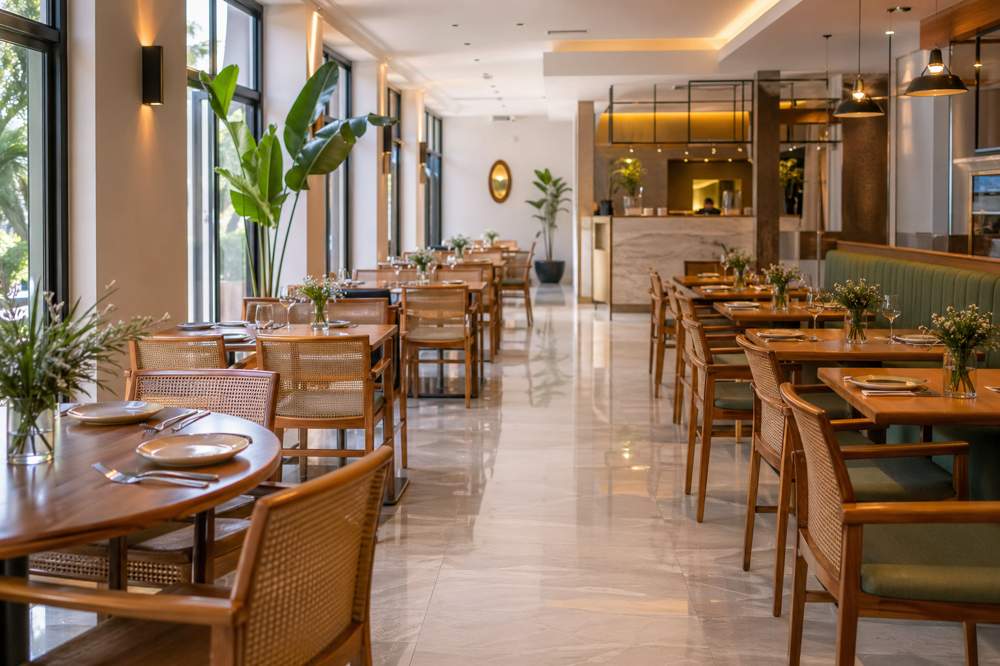
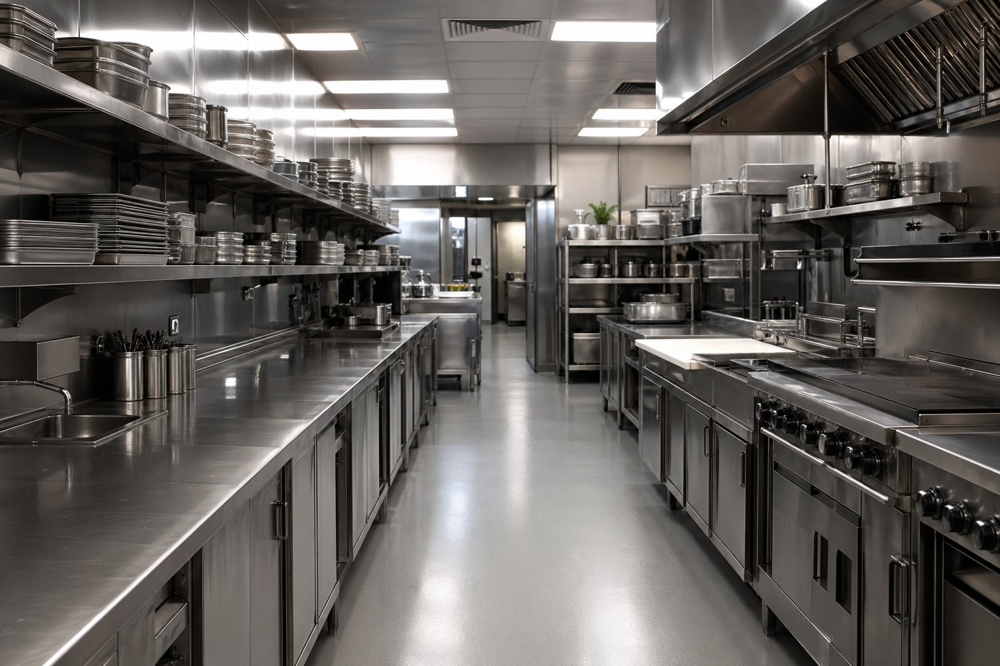

Cafés, bistrôs e restaurantes acumulam desafios que vão além de “varrer e passar pano”: restos orgânicos, odor, gordura em coifas e fogões e contato direto entre área de preparo e onde o cliente come. Uma limpeza de restaurante bem planejada integra rotina visível (salão e banheiros), rotina crítica (cozinha, pias e superfícies de manipulação) e registro simples de tarefas, alinhada às exigências de boas práticas de manipulação e à legislação sanitária vigente na sua região.
Abaixo, reunimos divisão por zonas, frequência sugerida, tipos de produto que costumam fazer diferença e um lembrete sobre segurança — sem substituir o manual de procedimentos da vigilância sanitária ou de uma consultoria especializada.
1. O que torna a limpeza de restaurante única

Em gastronomia, a sujeira não se distribui de forma uniforme. O salão recebe poeira, migalhas e respingos de bebidas; a cozinha concentra gordura atomizada, óleo no piso e áreas onde o contato cru → cozido precisa ser controlado com rigor; os banheiros de clientes funcionam como cartão de visitas e ponto sensível para reclamações. Somam-se pico de fluxo em almoço e jantar e necessidade de não interromper a produção quando a casa está cheia — o que vale rotinas curtas bem distribuídas e limpeza profundo fora do horário de serviço, quando possível.
- Gordura e calor: exigem desengordurante adequado, ventilação e horário seguro para evitar respingos em alimentos ou equipamentos ligados.
- Superfícies de contato com alimento: limpeza e, quando aplicável, sanitização com produto e diluição indicados pelo fabricante, respeitando tempo de contato.
- Imagem e confiança: mesas limpas, vidros sem marcas e odor controlado reforçam a percepção de higiene sem que o cliente precise “procurar defeito”.
2. Zonas do estabelecimento e prioridades
Pensar em rotas (do menos sujo ao mais sujo, ou o contrário em cozinha, conforme o protocolo da casa) evita cruzamento inadequado entre áreas críticas e reduz retrabalho.
- Recepção e salão: piso, rodapés, cadeiras, mesas entre um cliente e outro e, se houver, balcão de couverts e estações de buffet ou autosserviço — limpar e higienizar conforme uso e legislação local.
- Bar e zona de máquinas de bebidas: remover borras e fermentos de bandejas escorredoras; não deixar goteiras atrair insetos ou odores.
- Cozinha quente: mesas em inox ou polietileno, fogões e chamas, filtros quando existirem, pia de pré-lavagem e carrinhos — foco em desengordurar antes de desinfetar onde o processo exigir.
- Banheiros de clientes e funcionários: piso, vaso, pias, espelhos, lixeiras e suprimentos; checar torneiras e ralos para cheiro e acúmulo de água.
- Depósito e corredores de carga: evitar que sujeira e umidade migrem para salão ou câmara; manter entrada da cozinha com capacho ou zona de sanitização das rodas quando fizer parte do procedimento adotado.
💡 Dica
Separe panos ou cores por função — por exemplo um padrão para mesas/outro para sanitários — e identifique onde cada um só pode entrar. Isso simplesifica treinamento e reduz erro em horário cheio.
3. Frequência sugerida: tabela de referência
Os intervalos são orientativos; adapte ao porte da operação (quick service contra fine dining), cardápio frito versus cru e exigências da marca ou auditoria que você utilize.
| Área | Frequência típica | Foco principal |
|---|---|---|
| Mesas e cadeiras (salão) | Entre clientes e fechamento | Remover resíduos, limpar superfícies e reaplicar protocolo exigido para contato alimentar |
| Piso do salão | Diária + reforço no pico | Sujidade, bebidas derramadas e segurança antiderrapante |
| Banheiro de cliente | Várias vezes ao dia + checklist | Pia, piso, descarga, cheiro, papel e sabonete |
| Bancadas e pias de preparo | Durante o serviço e entre trocas de preparo | Remover sobras; limpar e sanitizar quando aplicável |
| Fogão, chapa e coifa | Fim de turno (mín.); coifa conforme carga de fritura | Gordura; evitar incrustação que vire risco de fogo ou odor permanente |
| Piso da cozinha | Várias vezes ao dia + lavagem profunda conforme uso | Óleo e água; antiderrapante e pisos sempre secos em rotas seguras quando possível |
| Lixo e área de segregação | Fechamento ou quando encher | Sacos fechados, tampas, higienização de recipientes para evitar vetores |
4. Produtos e uso que costumam funcionar bem

Escolha sempre com base na bula, compatibilidade com o material (inox, alumínio, pintura, pedra), ventilação — principalmente sob coifa — e necessidade legal de produto registrado para desinfecção em ambiente que produz ou serve alimento onde isso se aplique na sua cidade.
- Detergente e desengordurante adequados ao tipo de cozinha: limpeza de superfícies, chapa e filtros; diluição correta evita desperdício e odor residual forte no salão.
- Sanitizante ou alternativa prevista pela legislação do produto: superfícies de contato direto ou indireto com alimento, seguindo concentração e tempo indicados pelo fabricante.
- Desinfetante para sanitários e toques não alimentícios: maçanetas, porta de WC e áreas públicas quando o fluxo é alto.
- Vidros e espelhos: produto para vidro e panos limpos mantêm vitrines e divisórias atrativos sem halos ou cheiro forte.
- Limpeza de piso com acabamento antiderrapante: evitar excesso de cera molhada onde o problema é óleo; priorizar remover a camada superficial de gordura antes de pensar em brilho.
Na CSV Materiais de Limpeza (csv-materiaisdelimpeza.com.br), você pode montar uma linha detergente, desengordurante, sanitizantes/desinfetantes compatíveis com o seu fluxo, além de mop, mop úmido, panos em microfibra e utensílios que aguentam turno duplo. Conte o perfil do seu restaurante (porta, fritura, salão térreo ou sobreloja): ajudamos a equilibrar rendimento com segurança e conformidade esperada pela operação.
5. Conclusão
Uma limpeza de restaurante sólida combina rotina bem fatiada (por zona e por horário), tabela de frequência ajustável ao fluxo real, produtos compatíveis com cada superfície e equipe sabendo onde termina a faxina rápida e onde começa o procedimento sanitário obrigatório. Com isso, você reduz risco de contaminação cruzada, acidentes em piso molhado/oleoso e desgaste visual do ambiente — e fortalece a confiança de quem escolhe a sua mesa para comer bem.
Precisa revisar seu kit ou padronizar diluição para novos funcionários na cozinha ou no salão? Fale com a gente pelo site ou pelo WhatsApp e descreva metragem, tipo de menu e horário de pico: montamos uma sugestão objetiva para o dia a dia da sua casa.
🚀 Materiais de limpeza para o seu restaurante
Desengordurantes, detergentes, sanitização de superfícies e acessórios profissionais para salão e cozinha. Alinhe quantidade, diluição e estoque com a nossa equipe.
Ver Produtos